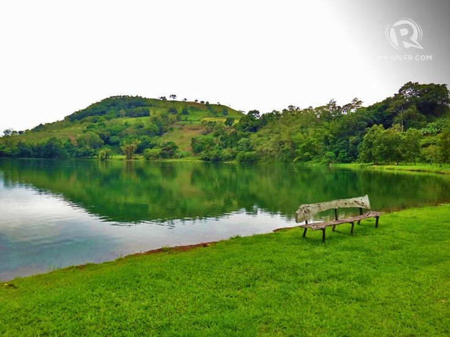
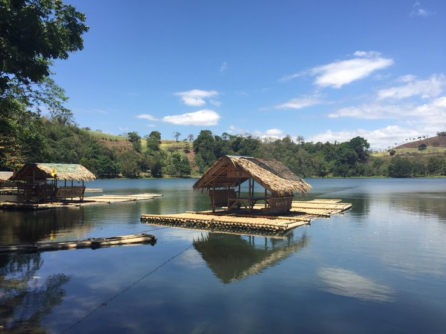

❮
❯
Lake Apo is a crater lake in Barangay Guinoyoran in the City of Valencia in Bukidnon province in the southern Philippines. It is located in a hilly area about 640 metres (2,100 ft) in elevation, about 11 kilometres (6.8 mi) WSW of the city poblacion (town center). Lake Apo was awarded the cleanest inland body of water in Northern Mindanao Region (Region X) in the late 1990s. The green body of water has an estimated area of 24 hectares (59 acres) with maximum depths reaching up to 26 m (85 ft).